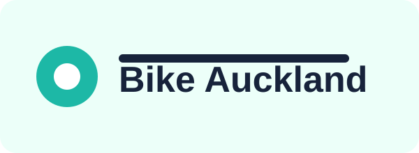
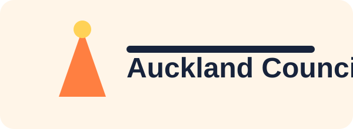
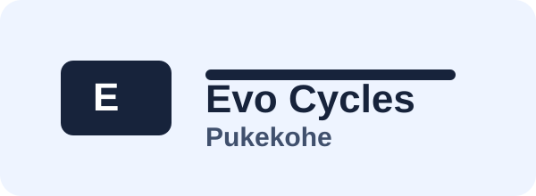

School Ride Ready
Placeholder content for cycle safety sessions in local primary and secondary schools.
Community Charity Organisation
We are a local charity championing confident, safe cycling for tamariki, commuters, and whānau across Pukekohe and nearby communities.
About Us
Bike Pukekohe works with local schools, council partners, and volunteers to make cycling safer and more welcoming. From practical skills to road confidence, our projects support people of all ages to ride with confidence.
What We Do
Placeholder content for cycle safety sessions in local primary and secondary schools.
Placeholder content for free basic safety checks and guidance before every ride.
Placeholder content for adults returning to cycling and route planning support.
Coming Up
Loading upcoming events...
Our Supporters



Get Involved
This section includes placeholder content. Add donation links, sponsorship details, and volunteer sign-up information here.
Contact
Email: hello@bikepukekohe.nz
Address: Pukekohe, Auckland, New Zealand (placeholder)